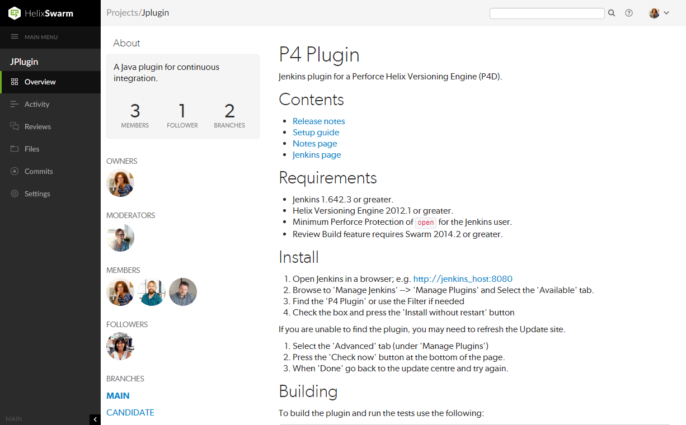

Projects
A Swarm project In Helix Swarm, a group of Helix server users who are working together on a specific codebase, defined by one or more branches of code, along with options for a job filter, automated test integration, and automated deployment. is made up of a group of Helix server users who are working together on one or more codelines within the Helix server. A project's definition includes one or more branches of code, and optionally a job
In Helix Swarm, a group of Helix server users who are working together on a specific codebase, defined by one or more branches of code, along with options for a job filter, automated test integration, and automated deployment. is made up of a group of Helix server users who are working together on one or more codelines within the Helix server. A project's definition includes one or more branches of code, and optionally a job A user-defined unit of work tracked by Helix server. The job template determines what information is tracked. The template can be modified by the Helix server system administrator. A job describes work to be done, such as a bug fix. Associating a job with a changelist records which changes fixed the bug. filter, automated test integration, and automated deployment. This section provides an introduction to the interactions users have with projects. For details about managing projects, see Projects.
A user-defined unit of work tracked by Helix server. The job template determines what information is tracked. The template can be modified by the Helix server system administrator. A job describes work to be done, such as a bug fix. Associating a job with a changelist records which changes fixed the bug. filter, automated test integration, and automated deployment. This section provides an introduction to the interactions users have with projects. For details about managing projects, see Projects.
Listing projects
To view a list of projects, click Projects in the menu.
Logged-in users can choose which projects to display by clicking on the My Projects tab or the All Projects tab. Anonymous users only see the public projects, the My Projects tab is not available to anonymous users:
- The My Projects: tab lists all of the projects that you are an owner of or a member of.
- The All Projects: tab lists all of the available projects.
- The Project Owner icon is displayed for projects you own.
- The Private Project icon
 is displayed for private projects you are authorized to view. For details, see Private projects.
is displayed for private projects you are authorized to view. For details, see Private projects. - The number in the icon to the right of the project name displays the total number of members for the project.
Search project names and project descriptions
You can search for Swarm project names and for the content of the project description from the projects page:
- Enter text in the search box.
- Click Search.
Any project names, and descriptions that match the search text are displayed in the project tab:

Switch to the other project tab to display search results for that tab.
Viewing a project
View a project by doing one of the following:
- Click on the project name in the projects list on the Swarm Projects page.
- Click on the project name or branch identifier in an activity stream.
- Visit the URL:
https://myswarm.url/projects/project-name.
Overview page
The project Overview page shows a description of the project.
The project's Overview page is only displayed if there is a README markdown file in the project's mainline.
The README file can contain Markdown text, allowing a formatted description of the project to be provided. For a description of the type of formatting that is supported, see Markdown in projects. For details on how to configure the mainline of a project, see Mainline branch identification.

The following information is displayed in the project sidebar:
- A short description of the project
- A Follow button, click to follow the project. This button is not available if you are a member of the project.
- A list of project owners
- A list of project moderators
- A list of project members
- A list of project followers
- A list of the branches defined for the project
Hover over a branch name to view the moderators on that branch.
Activity page
The project Activity page shows the activity stream for the project
The following information is displayed in the project sidebar:
- A short description of the project
- A Follow button, click to follow the project. This button is not available if you are a member of the project.
- A list of project owners
- A list of project moderators
- A list of project members
- A list of project followers
- A list of the branches defined for the project
Hover over a branch name to view the moderators on that branch.
Reviews page
The project Reviews page shows a list of code reviews specific to the project.
For more details on browsing, filtering, and searching reviews, see Reviews list.
Files page
The project Files page shows a list of files for the project, starting with a folder view representing each branch. Branches are designated with the branch icon  .
.
The project's main branch, identified by using a name such as main, mainline, master, trunk, is sorted to the top of the list of branches and appears in bold. The list of names can be configured, see Mainline branch identification for details.
For more information on browsing files, see Files.
Commits page
The project Commits page shows a list of changes made to the project.
For more details on history browsing, see Commits.
Jobs page
The project Jobs page shows a list of jobs associated with the project.
The Jobs page is only displayed when the project configuration includes a job filter. See Add a project for details.
For more details on browsing and searching jobs, see Jobs.
Settings page
The project Settings page shows the settings associated with the project.
By default, if the Only Owners and Administrators can edit the project check box is selected for a project, only the project owners and administrators can view the project Settings page.
This behavior can be changed by your Swarm administrator to allow project members that are not owners or administrators to view a read-only version of the project Settings page, see Allow project members to view project settings. The project Automated Tests and Automated Deployment details are hidden from project members unless they are an owner or an administrator. This enables project members to check the project settings but not change them.
Hover over the X Moderators text of a branch to view the moderators on that branch.
For more information about project settings, see Add a project.
Private projects
Private projects, introduced in Swarm 2016.2, provide a way to make specific projects and their activity less visible to Swarm users. When a project is made private, only the projects owners, moderators, and members, plus users with super privileges in the Helix server, can see the project, its activity streams, and ongoing reviews.
If you are logged in as an owner, moderator, or member of a private Swarm project, that project appears on the Swarm project page with an eye icon to indicate that it is private and has limited visibility:
Similarly, the eye icon appears beside the project's title when viewing the project. When you hover your mouse over the eye icon, a tooltip appears indicating that this project is indeed private.
Caveats
The following are important caveats regarding private projects:
- While Swarm can mask the existence of projects, their activity, and reviews, Swarm honors each user's access to files within the Helix server. This means that users that have access to the files in a private project's branches can browse to those branch paths within the depot and see the files and any committed changes.
- If you need to prevent access to important files, your Helix server administrator is required to manage the protections table accordingly. For details, see Authorizing Access in the Helix Core Server Administrator Guide.
- It is possible for a user to start a review that touches files that belong to a private project. If the user is not a member, owner, or moderator of the private project, or does not have super privileges in the Helix server, they cannot participate in the review.
- If a user is not a member, owner, or moderator of a private project, or does not have super privileges in the Helix server, and they are added as a review participant (via an Links in descriptions and comments or by editing a review's participants) to a review containing files within the private project's branches, that user cannot participate in the review: the user cannot see the review, its files, or comments. Due to limitations in how Swarm sends email notifications, such users could still receive notifications for reviews they cannot participate in.
- Notifications usually include links and mentions of the associated projects. Notifications involving private projects are filtered to remove any references to those private projects.